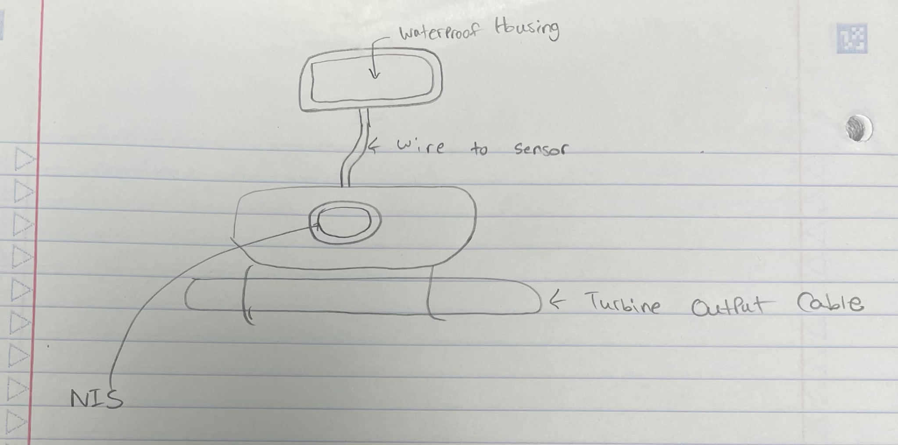

Initial Concept Sketch

Early concept sketch showing the original idea and component layout for the NIS system.
Refined Prototype Design

Refined prototype illustration demonstrating the waterproof housing, external sensor placement, and turbine output cable integration.